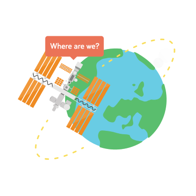

<dom-module id="kano-view-home">
    <style>
        :host {
            display: block;
            position: relative;
            @apply(--layout-vertical);
            @apply(--layout-center);
            background-color: #DCDCDC;
        }
        :host .pure-g [class *= "pure-u"] {
            font-family: 'Bariol', Helvetica, Arial, sans-serif;
        }
        :host a:hover,
        :host a:visited,
        :host a:link,
        :host a:active {
            text-decoration: none;
            color: #4B4B4B;
        }
        :host h1 {
            color: #4B4B4B;
            font-weight: 600;
            display: inline-block;
        }
        :host .container {
            width: 100%;
            padding: 0 100px;
        }

        @media screen and (max-width: 568px) {
          :host .container {
              width: 100%;
              padding: 0 20px;
          }
        }
        :host .banner {
            background-color: #444444;
            width: 100%;
            text-align: center;
        }
        :host .banner-content {
            display: inline-block;
        }
        :host .banner-image, .banner-text {
            text-align: center;
        }
        :host .banner-text > div {
            padding:10px;
            line-height: 1.5em;
            font-size: 24px;
            color: white;
        }
        :host .see-all {
            font-size: 14px;
            font-weight: 600;
            margin-top: 40px;
            margin-left: 10px;
        }
        :host a.button {
            background-color: #7DC242;
            color: #fff;
            -webkit-border-radius: 5px;
            -moz-border-radius: 5px;
            border-radius: 5px;
            -webkit-font-smoothing: antialiased;
            -webkit-font-smoothing: antialiased;
            -moz-osx-font-smoothing: grayscale;
            display: inline-block;
            padding: 10px 15px;
            text-transform: uppercase;
            font-size: 15px;
            font-weight: bold;
            @apply(--kano-button);
        };

        :host .banner-image img {
            width: 70%;
        }

        @media screen and (min-width: 550px) {
            .banner-text {
                padding: 50px 100px;
                text-align: left;
            }
            .banner-image {
                padding: 20px;
            }
            .make-app-button {
                margin-left: 10px;
                margin-top: 20px;
            }
        }
        @media screen and (min-width: 1400px) {
            .banner-content {
                width: 1400px;
            }
            .banner-image {
                padding: 50px 100px;
            }
        }
    </style>
    <template>
        <div class="banner">
            <div class="banner-content pure-g">
                <div class="banner-text pure-u-1 pure-u-md-1-2">
                    <div><iron-image src="../../assets/logo.png" preload ></iron-image></div>
                    <div>In minutes you can make apps that control colour, check windspeed on Mount Everest, and track astronauts in space. Then share them with your friends.</div>
                    <a id="get-started" class="link style-scope kano-app button make-app-button" href="/story/background_color">Get started</a>
                </div>
                <div class="banner-image pure-u-1 pure-u-md-1-2"></div></div>
            </div>
        </div>
        <div class="container">
            <h1>Projects</h1>
            <kano-projects projects="[[projects]]" loading="[[loadingProjects]]"></kano-projects>
            <h1>My Apps</h1><a class="see-all" href="/apps/my">See all &gt;</a>
            <kano-app-list limit="3" view="my" apps="[[user_apps]]" play-url="{{PLAY_URL}}"></kano-app-list>
            <h1>Latest Apps</h1><a id="see-all-community" class="see-all" href="/apps">See all &gt;</a>
            <kano-app-list limit="4" apps="[[apps]]" play-url="{{PLAY_URL}}"></kano-app-list>
        </div>
    </template>
</dom-module>

<script>
    /* globals Polymer */
    /* globals app */
    class KanoViewHome {
        beforeRegister () {
            this.is = 'kano-view-home';
            this.properties = {
                projects: {
                    type: Array,
                    value: []
                },
                user: {
                    type: Object,
                    observer: "userChanged"
                }
            };
        }

        userChanged () {
            if (!this.user) {
                return null;
            }

            app.sdk.api.share.list({}, { app_name: 'make-apps', user_id: this.user.id, limit: 3})
                .then((apps) => {
                    this.set('user_apps', apps.body.entries);
                });
        }

        ready () {
            this.PLAY_URL = app.config.PLAY_URL;
            this.loadingProjects = true;
            app.stories.list()
                .then((stories) => {
                    // Go through all the stories and update the `locked` key
                    let promises = stories.map((story) => {
                        // Load the story's progress group
                        return app.progress.loadProgress()
                            .then((progress) => {
                                let progressGroup = progress[story.progress.group] || {};
                                // `storyNo` is the last completed story number of the user. If the story number is over
                                // that number plus one, the story is locked
                                if (progressGroup.storyNo + 1 < story.progress.storyNo) {
                                    story.locked = true;
                                }
                                return story;
                            });
                    });
                    return Promise.all(promises);
                })
                .then((projects) => {
                    this.loadingProjects = false;
                    this.set('projects', projects);
                });
            app.sdk.api.share.list({}, { app_name: 'make-apps', limit: 4})
                .then((apps) => {
                    this.set('apps', apps.body.entries);
                });
        }
    }

    Polymer(KanoViewHome);
</script>
